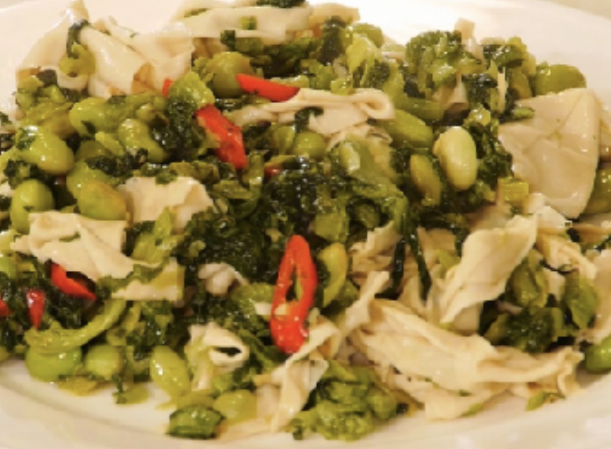

#32 - SALTED VEGETABLE WITH TOFU SHEET & EDEMAME - 鹹菜百頁毛豆
This is a vegetarian dish which you can find in many Shanghainese restaurants.

INGREDIENTS:
- 6 sheet (approx. 175g) thick tofu sheet (百頁)
- 200g fresh/frozen edamame with skin on
- 200g shanghai vegetable (小棠菜)
- 1 TBSP coarse salt
- ¼ red bell pepper, sliced thin strip
- ½ tsp baking soda
- 2 slices ginger
- 2 shallots, diced
- 1 cup Chicken / vegetable broth
- 1 tsp sugar
Directions:
- Wash and dice Shanghai vegetable. Put it in a bowl and mix in the coarse salt.
- Pack the salted vegetable in a jar and put it in the refrigerator for at least 1 day.
- Take out the salted vegetable and wash it in fresh water. Squeeze dry and set aside.
- Boil edamame in water for 3 min, drain. Remove the shell and set aside.
- Slice tofu sheet into 3 x ¼ - inches strip.
- Soak in hot water with baking soda for 1/2 hr. Drain and rinse.
- In a wok with hot oil, put in diced shallot, then the tofu sheet. Stir-fry for a few min then add in water/broth. Cook until the tofu sheet is tender and the broth reduced to ½ cup. Remove and set aside.
- Heat in a wok again; add oil, then the ginger. Cook until fragrant. Add the salted vegetable and stir-fry. Add a bit water if necessary to cook the vegetable until soft.
- Add in the edamame, the tofu sheet and the red bell pepper. Mix well.
- Add 1 tsp sugar and taste.
- Put on serving plate.
(Serves 1 person)
Note:
- The dish should not be dry. There should be some sauce left in it when serve.